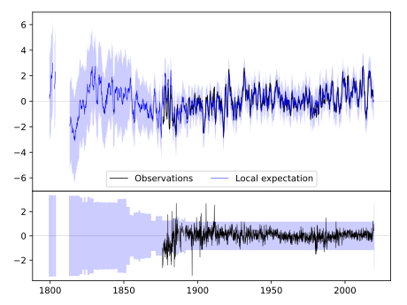
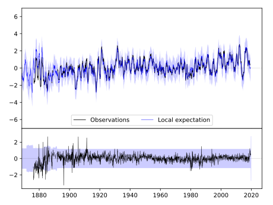
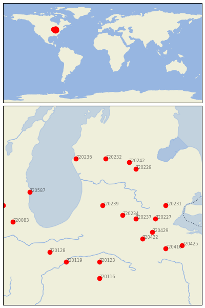

KALAMAZOO STATE HOSP [USA]


| Neighbour | Name | Country | Distance | Lon/Lat | Years |
|---|
| 720239 | KALAMAZOO STATE HOSP | USA | 0 | -85.6, 42.3 | 1876-2019 |
| 720234 | COLDWATER ST SCHOOL | USA | 59 | -85.0, 42.0 | 1868-2019 |
| 720237 | HILLSDALE | USA | 93 | -84.6, 41.9 | 1880-2019 |
| 720227 | ADRIAN 2 NNE | USA | 139 | -84.0, 41.9 | 1870-2019 |
| 720229 | ALMA | USA | 146 | -84.6, 43.4 | 1887-2019 |
| 720422 | DEFIANCE | USA | 149 | -84.4, 41.3 | 1887-2019 |
| 720429 | WAUSEON WTP | USA | 152 | -84.1, 41.5 | 1870-2019 |
| 720232 | BIG RAPIDS WTR WKS | USA | 155 | -85.5, 43.7 | 1887-2019 |
| 720231 | ANN ARBOR U OF | USA | 156 | -83.7, 42.3 | 1854-2019 |
| 720242 | MT PLEASANT UNIV | USA | 158 | -84.8, 43.6 | 1887-2019 |
| 720236 | HART 3 WSW | USA | 168 | -86.4, 43.7 | 1886-2019 |
| 720587 | RACINE | USA | 185 | -87.8, 42.7 | 1855-2019 |
| 720123 | MARION 2 N | USA | 189 | -85.7, 40.6 | 1885-2019 |
| 720128 | RENSSELAER | USA | 204 | -87.2, 40.9 | 1864-2019 |
| 720119 | DELPHI 2 N | USA | 210 | -86.7, 40.6 | 1893-2019 |
| 720416 | FINDLAY WPCC | USA | 214 | -83.7, 41.0 | 1886-2019 |
| 720083 | AURORA | USA | 229 | -88.3, 41.8 | 1857-2019 |
| 720425 | TIFFIN | USA | 239 | -83.2, 41.1 | 1873-2019 |
| 720116 | ANDERSON SEWAGE PLT | USA | 244 | -85.7, 40.1 | 1893-2019 |
| 720097 | MARENGO | USA | 246 | -88.6, 42.3 | 1856-2019 |